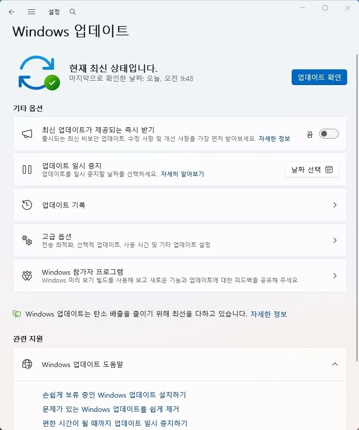

업데이트
업데이트 반복 실패 원인과 점검 순서
윈도우 업데이트가 계속 실패하고 다시 시도하는 경우
업데이트 반복 실패는 다운로드 자체가 안 되는 경우도 있지만, 설치 단계에서만 계속 되돌아가는 경우가 더 흔합니다. 이럴 때는 서버 문제로 넘기기보다 캐시, 권한, 남은 공간부터 보는 편이 빠릅니다.
업데이트 기록에 같은 코드가 반복되면 윈도우 구성요소가 막혀 있을 가능성이 높습니다. 반대로 코드가 바뀌며 실패한다면 디스크 여유나 보안 정책, 서비스 충돌도 같이 봐야 합니다.
이 페이지는 업데이트가 어디서 반복되는지에 따라 점검 순서를 나눠서 설명합니다.
업데이트가 실패할 때마다 Windows는 원인과 무관하게 우선 이전 상태로 롤백부터 시도합니다. 이 롤백 자체는 정상 동작이지만, 재부팅 후 '업데이트 구성 중' 화면이 유독 오래 유지되다가 롤백된다면 시스템 파일이나 구성 요소 저장소 손상 쪽 가능성이 커집니다. 반대로 롤백이 빠르게 끝나고 곧바로 실패 알림이 뜬다면 다운로드나 네트워크 단계에서 걸린 것이라 원인이 다릅니다.
이 가이드가 필요한 상황
- 같은 업데이트를 여러 번 다시 시도한다.
- 재부팅 후에도 바로 실패가 반복된다.
- 디스크 공간이 거의 없거나 임시 파일이 많다.
먼저 확인할 항목
- 업데이트 기록과 코드 확인 — 반복되는 실패는 같은 구성요소가 계속 막히고 있다는 신호입니다. 설치 실패 코드와 반복되는 업데이트 이름을 먼저 적어 두세요. 설정 → Windows 업데이트 화면에서 업데이트 기록을 눌러 실패한 항목과 날짜를 확인할 수 있습니다.

- 임시 파일과 캐시 정리 — 업데이트 캐시가 손상되면 같은 파일을 계속 다시 받다가 실패할 수 있습니다. 디스크 정리와 업데이트 캐시 초기화를 순서대로 해보세요.
- 보안 프로그램과 정책 확인 — 업데이트가 보안 프로그램이나 회사 정책에 막히는 경우도 있습니다. 잠시 비활성화하거나 관리 정책이 걸려 있는지 확인합니다.
원인을 더 정확히 나누는 방법
실패 코드보다 패턴이 더 중요할 때
같은 코드가 반복되면 캐시와 서비스 문제일 가능성이 높고, 매번 다른 코드가 나오면 공간 부족이나 전원 끊김, 정책 충돌처럼 바깥 조건을 더 봐야 합니다.
업데이트가 부팅 문제를 남길 때
실패 후 재부팅이 되지 않으면 자동 복구 루프로 이어질 수 있으므로, 단순히 다시 누르기보다 복구 지점을 남겨두고 상태를 확인하는 것이 좋습니다.
확인 결과에 따른 다음 단계
- 같은 코드가 계속 뜰 때 — 업데이트 파일이나 서비스가 꼬였을 가능성이 높아 초기화와 캐시 정리를 먼저 해야 합니다.
- 다른 코드가 번갈아 뜰 때 — 디스크 공간, 전원 안정성, 백신/보안 정책처럼 외부 조건을 함께 확인하세요.
피해야 할 실수
- 실패 코드 없이 재시도만 반복하는 것
- 공간이 부족한데도 큰 파일을 그대로 두는 것
자주 묻는 질문
- 업데이트를 일시 중지했다가 다시 하면 나아지나요? 일시적으로 나아질 수는 있지만, 같은 패턴이 반복되면 캐시나 서비스 문제를 다시 봐야 합니다.
- 업데이트 후 "바이러스 보호가 꺼져 있습니다" 경고가 떠요. 감염된 건가요? 2026년 8월 Windows 업데이트 이후 일부 PC에서 Defender가 정상 작동 중인데도 잘못된 경고가 뜨는 표시 오류가 보고됐습니다. Windows 보안에서 실제 보호 상태를 다시 확인해보고, 정상이라면 알림 자체의 버그일 가능성이 높습니다.
- 업데이트 후 재부팅이 유난히 잦아요. 왜 그런가요? 2026년 8월 업데이트부터 Secure Boot(보안 부팅) 인증서를 새 버전으로 교체하는 작업이 더 넓은 범위로 배포되고 있습니다. 기존 인증서 만료(2026년 6~10월)에 대비한 정상적인 백그라운드 작업으로, 재부팅 한두 번으로 조용히 끝나는 경우가 대부분입니다. (출처: Microsoft 공식 KB5121003 문서)
이 증상과 함께 나타나는 오류 코드
- 0x800F081F · 원본 파일을 찾을 수 없음
- 0x80070422 · 필요한 서비스가 비활성화됨
- 0x80070070 · 디스크 공간 부족
- 0xC1900101 · 업데이트 드라이버 호환성 실패
- 0x80240034 · WU_E_UNKNOWN 알 수 없는 업데이트 오류
- 0x800F0983 · CBS 매니페스트 손상 오류
- 0x8007000D · 업데이트 파일 누락 또는 손상
최종 검토일: 2026-09-16